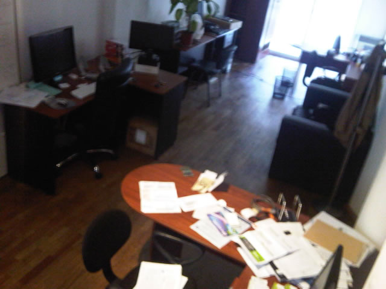

Historia
Neolo.com es la empresa de web hosting que nació para escuchar a los clientes y brindarles el servicio que necesitan.
Nos caracterizamos por una atención personalizada con cada cliente y por brindar un servicio estable, fácil y accesible.
La historia comienza en enero del 2003, nos llamábamos Aeolus Hosting.
Empezamos contratando un plan revendedor de web hosting a un proveedor, hacíamos el soporte técnico y las ventas. Y todo desde nuestras casas, contestando emails en pantuflas a nuestros clientes en horarios de madrugada. A los pocos meses ya contábamos con varios clientes, nuestros primeros servidores dedicados y una gran energía para continuar creciendo.
"En el 2004 quería que tuviéramos oficinas, pero como tenía 19 años, en las inmobiliarias no me atendían y no me querían alquilar por ser menor de 21 años. Entonces, decidí levantar unas paredes en la casa de mis papás y atender allí a los primeros clientes de la empresa."
Ya con oficina funcionando en el barrio de Palermo, el primer empleado, los primeros cientos de clientes y siempre números verdes, seguimos adelante.
3 años más tarde, año 2007, teníamos más clientes de web hosting que el ISP que nos vendía el espacio en datacenter y la conectividad.
Era hora de un nuevo cambio, así que alquilamos una nueva oficina en el barrio de Belgrano, importamos nuevos servidores DELL Poweredge desde Estados Unidos, los metimos en racks y con un enlace dedicado de PRIMA, teníamos control total de los equipos y del servicio que brindábamos. A partír de allí, el uptime se incrementó hasta alcanzar el 99.99% del tiempo en línea.
Comenzamos a formar un excelente grupo humano que siguió creciendo año tras año y actualmente continúa brindando una atención completamente personalizada, conociendo a cada cliente para ofrecerle soluciones según sus necesidades.
Tres ya eran las grandes empresas de telecomunicaciones que habían intentado comprar Neolo.com. Decidimos mirar para adelante y seguir trabajando.
En el año 2008, cambiamos la marca de Aeolus Hosting a Neolo.com, brindando ahora también servicios de web hosting para el mercado de Brasil.
Dado el crecimiento, movimos nuestros equipos a un datacenter que pudiera abarcar las necesidades de Neolo.com, que duplicaba su cartera de clientes, año tras año ininterrumpidamente.
También, explotamos varias veces los sistemas de facturación “enlatados” que desarrollan empresas estadounidenses para otras empresas de hosting, asíque desarrollamos nuestro propio sistema que pudiera cubrir las necesidades de Neolo.com y de los clientes.
2009. Somos más. Seguimos creciendo. Ya los clientes eran miles. Más de 10 personas trabajando en Neolo.com. Nuestro mejor marketing fue brindar el mejor servicio disponible en el mercado.
2010. Producto de nuestro crecimiento a pulmón, con inteligencia, con números verdes, y siempre con financiación de los beneficios que generaba la misma empresa, nos empiezan a contactar de distintos medios. Roger Schultz, un abogado especialista en derecho de alta tecnología con 3 empresas creadas en su haber, se suma como socio en Neolo.com.
En el área de prensa podés conocer algunas de las notas que nos hicieron en La Nación, Revista Apertura, C5N, TyN, TN Tecno, Infobae y El Cronista, entre otros.
Decidimos apostar al interior del país y apoyamos distintos eventos como Barcamp’s, Wordcamp’s, Blog Day’s, Palermo Valleys, Días de Admin y otros eventos que ayuden a promover la industria de Internet en Argentina.
Nos convertimos en la primer empresa en Argentina en brindar un servicio de web hosting ilimitado.
También fuimos líderes al brindar un servicio de Tips en Consultoría SEO sin cargo para nuestros clientes.
Lanzamos Neolo.TV; un videoblog con noticias de tecnología e internet.
Iniciamos operaciones en España y México. Dos mercados sumamente competitivos y maduros.
Nos mudamos nuevamente, esta vez a Colegiales, a los Silos de Dorrego, con una linda “sala de reuniones” aka “pileta” :)